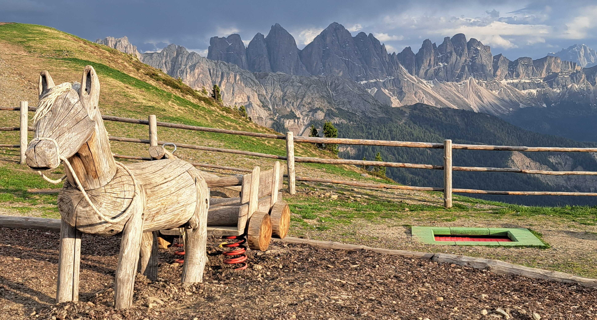
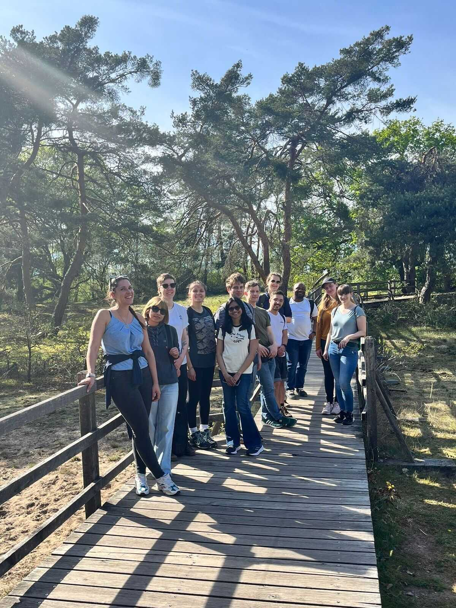

Latest news from our research group.

© K. ImkellerKatharina @ CSAMA2026
May 2026Katharina participates as a lecturer in the CSAMA2026 - Biological Data Science Summer School in Bressanone-Brixen, Italy. The summer school comprises lectures, hands-on exercises, and informal discussion sessions related to the topics of modern quantitative biotechnologies, experimental design, statistical analysis and visualization. The social programme features a scenic hike to the Rossalm on Plose mountain.

© K. ImkellerExcursion to Schwanheimer Düne
April 2026Together with our colleagues from the Basorth Lab and the Research Group of Translational Neurooncology, we walked through the Schwanheimer Düne. We enjoyed the opportunity to exchange scientific ideas in an informal setting while exploring the remarkable landscape. The Schwanheimer Düne is one of the few inland dune landscapes in Germany and represents a unique natural reserve near Frankfurt am Main. The area is characterized by rare vegetation, sandy grasslands, and diverse wildlife, making it a beautiful destination for outdoor excursions.